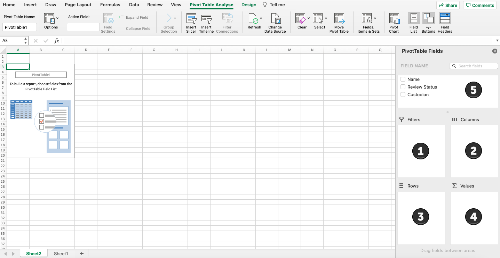

Instead of producing the documents directly, it is also possible to produce a report of the documents. These reports contain information about the documents, such as where the document is located, on which server it is located, the email ID associated with the document, and much more. This is particularly important when it comes to the right to be forgotten, which is often requested by data subjects after invoking the right of access.
Producing reports is also of importance when it comes to deleting data in ZyLAB ONE. Since not every user has been assigned with the same rights by the administrator, it can be of use to report the documents that need to be deleted and then forward the report to the authorized personnel that can delete the documents, like the IT department.
In order to produce a report, the user first has to select the desired documents that should be produced into a report. If the user wishes to report documents that should be later deleted by the authorized personnel, it is common to apply the Potentially Removal Tag to the documents that should be deleted. After applying the tag, the documents can then be found in the Document List page, by selecting the Potentially Removal tag beneath the search box and clicking Search. This action ensures that only documents that have been assigned with the Potentially Removal tag will be shown in the Document List page.
To produce a report, click columns and select the desired tags:
Now, the user can press the settings icon, and select the Reports option. Here the user can decide whether the report should be exported as an Excel or a CSV file. The user can also select the option whether or not the report should include information about the redactions inside the documents.

Next, the user can open the Excel or CSV file. All selected documents and data are now in this report.

We recommend changing the format of the columns in Excel to AutoFit Column Width to make it more readable.

To get a better overview, we recommend creating a pivot table.


Here, the user can select the range of the table. The range of the table consist of the data included in the table. The user can select all the data in the sheet by pressing the left mouse button and dragging a field across all the relevant data. Next, the user can select where the table should be created, this can be in either a new sheet or in the existing sheet.
After this, Excel will create tags depending on the information selected in the range of the table. Here, the user can select which information, selected in the range of the table, should be shown in the final Pivot Table. This can be done by simply selecting the desired fields.

Pivot Table Example
In this report, the name of the document has been used as filter. The custodian is under rows and PTM-Address, nationality, religion, IBAN, ID, date of birth and place of birth have been chosen as values.

To see for instance what data is present in the documents of one of the custodians, double click on any of the values in the table in the custodian’s row.